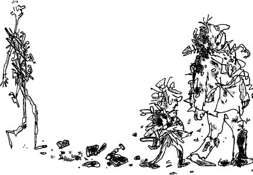
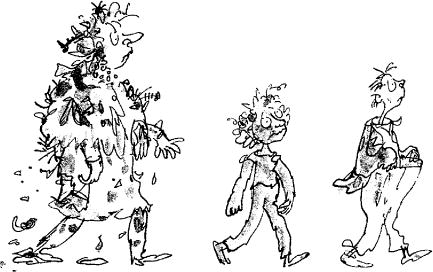

‘We must go down and take a look at our little friends before we do anything else,’ said Mr Wonka. He pressed a different button, and the lift dropped lower, and soon it was hovering just above the entrance gates to the factory.
Looking down now, Charlie could see the children and their parents standing in a little group just inside the gates.
‘I can only see three,’ he said. ‘Who’s missing?’
‘I expect it’s Mike Teavee,’ Mr Wonka said. ‘But he’ll be coming along soon. Do you see the trucks?’ Mr Wonka pointed to a line of gigantic covered vans parked in a line near by.
‘Yes,’ Charlie said. ‘What are they for?’
‘Don’t you remember what it said on the Golden Tickets? Every child goes home with a lifetime’s supply of sweets. There’s one truckload for each of them, loaded to the brim. Ah-ha,’ Mr Wonka went on, ‘there goes our friend Augustus Gloop! D’you see him? He’s getting into the first truck with his mother and father!’
‘You mean he’s really all right?’ asked Charlie, astonished. ‘Even after going up that awful pipe?’
‘He’s very much all right,’ said Mr Wonka.
‘He’s changed!’ said Grandpa Joe, peering down through the glass wall of the elevator. ‘He used to be fat! Now he’s thin as a straw!’
‘Of course he’s changed,’ said Mr Wonka, laughing. ‘He got squeezed in the pipe. Don’t you remember? And look! There goes Miss Violet Beauregarde, the great gum-chewer! It seems as though they managed to de-juice her after all. I’m so glad. And how healthy she looks! Much better than before!’
‘But she’s purple in the face!’ cried Grandpa Joe.
‘So she is,’ said Mr Wonka. ‘Ah, well, there’s nothing we can do about that.’
‘Good gracious!’ cried Charlie. ‘Look at poor Veruca Salt and Mr Salt and Mrs Salt! They’re simply covered with rubbish!’
‘And here comes Mike Teavee!’ said Grandpa Joe. ‘Good heavens! What have they done to him? He’s about ten feet tall and thin as a wire!’
‘They’ve overstretched him on the gum-stretching machine,’ said Mr Wonka. ‘How very careless.’
‘But how dreadful for him!’ cried Charlie.
‘Nonsense,’ said Mr Wonka, ‘he’s very lucky. Every basketball team in the country will be trying to get him. But now,’ he added, ‘it is time we left these four silly children. I have something very important to talk to you about, my dear Charlie.’ Mr Wonka pressed another button, and the lift swung upwards into the sky.
